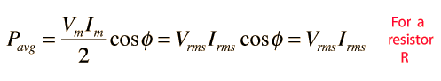

RMS and Effective Values
Circuit currents and voltages in AC circuits are generally stated as root-mean-square or rms values rather than by quoting the maximum values.
The root-mean-square for a current is defined by
That is, you take the square of the current and average it, then take the square root. When this process is carried out for a sinusoidal current
Since the AC voltage is also sinusoidal, the form of the rms voltage is the same. These rms values are just the effective value needed in the expression for average power to put the AC power in the same form as the expression for DC power in a resistor. In a resistor where the power factor is equal to 1:

Since the voltage and current are both sinusoidal, the power expression can be expressed in terms of the squares of sine or cosine functions, and the average of a sine or cosine squared over a whole period is = 1/2.
|